Jonathan Lloyd
Solve the Puzzles below to find some info about me!
Drag the pieces onto the grid!
WHO AM I?

 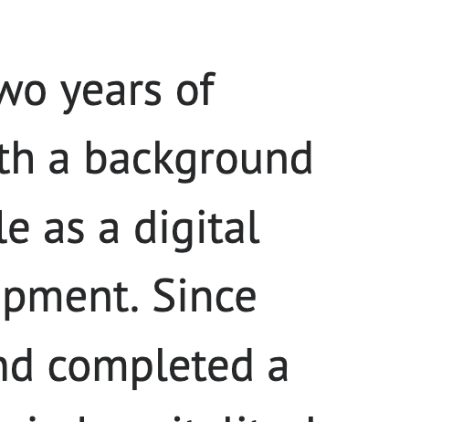
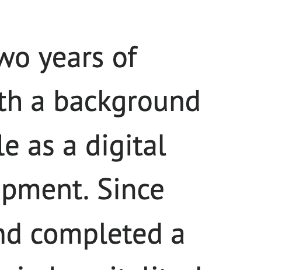


WHY SOFTWARE DEV?


 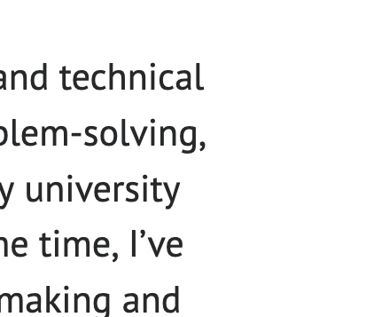
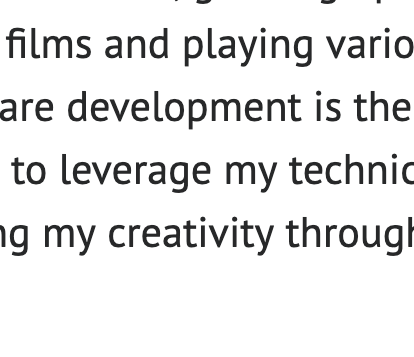
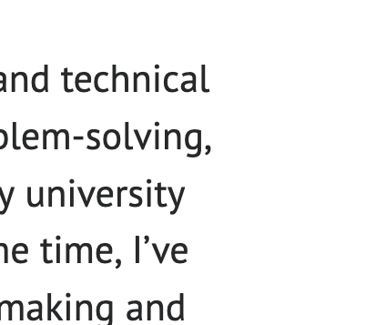
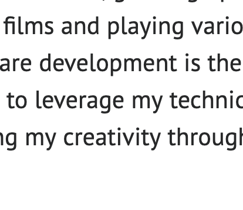
WHY FOUNDERS
AND CODERS?


 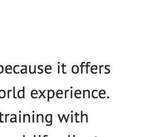
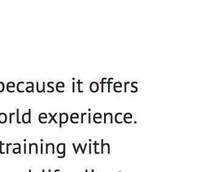

WHY ME?

 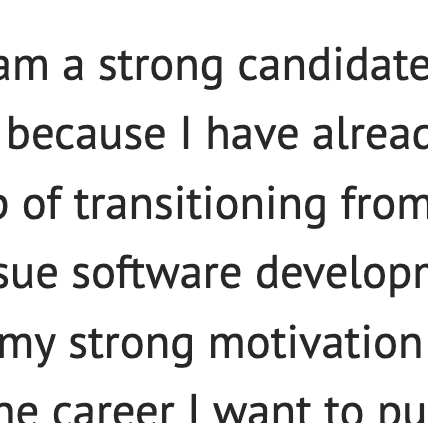
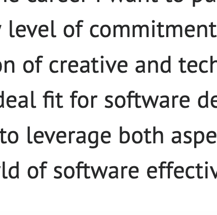
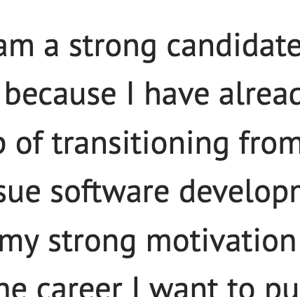
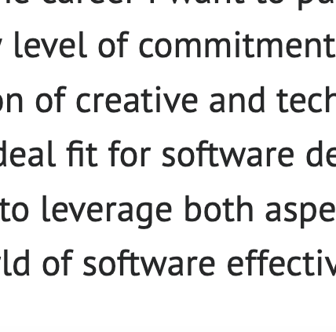
Where did it all start?
have a little look at my timeline below
I came into existence
I was born in Islington, London. I don’t remember this part, so there’s not much to say!
School
I went to Primary school and secondary school in Camden. My favourite subject was Maths and my main hobby was film making. Throughout my school years, me and my friends created a TV show called The Loonies. We created 70 episodes, 8 series, and put them all on DVD. They are so fun to look back on. I created the DVD covers for them too!

Gap Year
I decided to take a year out between 6th Form and university. I spent 4 months trying as best I could to try out lots of different jobs to see what I enjoyed. I worked 2 days a week at a guitar shop, worked at my old school giving Maths revision sessions, and also got a job as a tour guide. As well as this, I worked as a deliveroo rider on evenings and weekends. Once I had saved up enough money, I flew to India with a friend, and we spent a few months exploring the country!
University
I went to the University of Leeds to study Mathematics, as I had always loved it at school. I was looking for a challenge, and hearing that university-level Maths was difficult only excited me more! During my time there, I made lots of good friends and got into DJing as a side hustle. I also organised events and club nights, where I DJed alongside others.Throughout my time at university, I quickly realised that I preferred pure, abstract Mathematics over the physics and statistics aspects. I enjoyed getting lost in thought and tackling complex, abstract problems. For my dissertation, I focused on Logic, and I graduated with a First-Class degree in 2020.
Finished Uni
After finishing university, a few of my friends were still studying in Leeds, and I was uncertain about my next steps. Then, with the onset of Covid, I decided to try working at a school. It also seemed like the only way to legally leave the house at the time! I took on a role as a learning support worker in Leeds, providing 1-to-1 assistance to children who needed extra help. As Covid restrictions began to ease later in 2020, I focused on improving my DJ skills and started DJing at bars around Leeds.
Digital Marketing and Events
I moved back to London and got a job in Marketing, which was fun at first! However, the more I got into it, the more I realised how much I enjoyed the small part of the job that involved coding, and how much I missed solving the problem solving side of my degree. On the side, I also started a bi-yearly club night to keep up with my creative interests (instagram link below). I designed all the posters using Figma, which was actually my favourite part of it all, and it got me thinking. I knew I wanted to be creative, and I enjoyed making posters, but I also had a passion for coding. Then, two words came to me... Software Development.
Career Change
Towards the end of 2023, I was reaching the two year mark at my company, and found myself on youtube all the time trying to learn code. I decided to quit my job, and sign up for a software development bootcamp. I became familiar with a variety of technologies both back end and front end. These included Javascript, HTML, CSS, PHP, React and SQL. I fell in love with web dev and haven’t looked back! The bootcamp I did mainly consisted of Codecademy courses, and I had people I could email if I got really stuck with a certain concept. However, the course was largely self-guided, and most of my learning was independent. Scroll to the end of the timeline to have a go on my favourite project that I have created since I started the bootcamp!
The Future...
I am now looking for a way to kickstart a career in software development, in the hope that I can use the skills I have learnt, along with my eagerness to learn more, to work with some great people and to produce some amazing work!
Lets have a look at a couple of my projects:
GAZETTEER
Gazetteer is a mobile-friendly website designed to profile countries by presenting demographic, climatic, geographical, and other relevant data. The website utilises third-party APIs such as OpenCage, Open Weather, Geonames, Rest Countries, and Open Exchange Rates to gather and display data. The user interface is built with HTML/CSS, JavaScript, JQuery, and PHP, ensuring a responsive and interactive experience across both mobile and desktop devices. Do have a go on the website embedded above, or feel free to access the link by Clicking on 'GAZETTEER' above!
Company Directory is a website that maintains a company personnel SQL database, hosted on InfinityFree. The website allows users to add, edit, remove, and filter Departments, Personnel, and Locations. The user interface is built using HTML/CSS, Javascript, JQuery and PHP. Feel free to add some information to the application to see how it works!
*Unfortunately I was unable to embed the website into this one (like I did with Gazetteer), due to an issue with the hosting permissions that I am in the process of trying to fix! However, please don’t hesitate to have a look at the website by clicking on the thumbnail above.
Thank you for taking the time to visit my website, and please see my relevant links below!